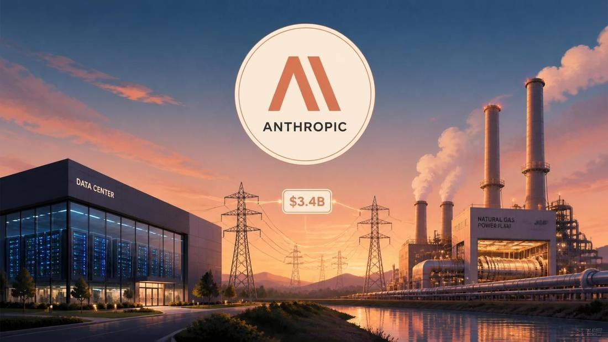

Anthropic Takes Over $3.4B of Gas-Generator Orders to Power Its AI Data Centers, FT Reports
The Financial Times reported on November 8, 2026 that Anthropic agreed in late September to take over about $3.4 billion of gas-fired generator commitments from OnePWR Solutions, covering 1.7 gigawatts of heavy-duty generators the Texas supplier had ordered from Caterpillar about two years earlier. Anthropic did not buy OnePWR and no employees transferred; the deal includes the engineering and construction capability to install the machines. Reuters relayed the report the same day but said it could not immediately verify it, and neither company commented.

- 01THE REPORT — The Financial Times reported on November 8, 2026 that Anthropic agreed in late September to take over about $3.4 billion of gas-generator commitments, 1.7 gigawatts of heavy-duty generators, from OnePWR Solutions; Reuters and Bloomberg relayed the report the same day.
- 02THE CORROBORATION — Transaction adviser Piper Sandler lists a September 2026 OnePWR transaction valued at $3.4 billion to an unnamed frontier AI lab; Reuters said it could not immediately verify the FT report and neither Anthropic nor OnePWR commented.
- 03THE WATCHPOINT — Where the generators are installed, when they come online, and whether Anthropic's IPO roadshow pricing reflects the scale of the physical build-out behind the model business.
WHAT HAPPENEDWhat Happened
Anthropic agreed in late September to take over about $3.4 billion of gas-fired generator commitments from OnePWR Solutions, covering 1.7 gigawatts of heavy-duty generators the Texas supplier had ordered from Caterpillar about two years earlier, the Financial Times reported on November 8, 2026. Anthropic did not acquire OnePWR itself and no employees transferred, but the deal includes the engineering and construction capability needed to install the machines. Anthropic had first planned to become a OnePWR customer, then chose to take over the orders instead.
The report carries a clear verification gap. Reuters, which relayed the FT report the same day, said it could not immediately verify it, and Anthropic and OnePWR did not respond to requests for comment. A separate cross-check points the same way: transaction adviser Piper Sandler lists a September 2026 OnePWR Solutions transaction valued at $3.4 billion, the sale of a power-generation platform to an unnamed frontier AI lab. Seller, month and value match the reporting, but the listing does not name Anthropic or fix the exact contractual scope.
WHY IT MATTERSThe AI race is now fought over delivery slots, not just chips
Manufacturing lead times for gas turbines and generators stretch years into the future, the FT reported, and that queue is now the bottleneck. Caterpillar's own numbers show where it sits: third-quarter Power Generation sales were $3.421 billion, up 30% year on year and mainly in data center applications, and its firm backlog stood at about $78.1 billion at September 30, with about $32.6 billion not expected to be filled within twelve months.
Buying someone else's place in that queue is the shortcut, and the FT described the Anthropic deal as the largest known single purchase of power-generation equipment by an AI lab. The pattern is already visible across the supply chain: buyers ordered 57 jet turbines from GE Vernova, up from 9, and Generac's data center backlog hit $4.5 billion. The labs with the deepest pockets are buying their way to the front of every queue, power included, while everyone else waits.
WHY IT MATTERSPower is now a line item in the IPO story
Anthropic's amended S-1, filed November 2, reports about $895.4 billion of committed spend as of and after September 30, substantially all for compute and infrastructure, including about $69.8 billion due in the following twelve months. Reuters reported in September that Anthropic expects to spend more than $500 billion over ten years building AI infrastructure. The generator deal is the physical side of that ledger: machines, fuel and construction crews, not just model weights.
The roadshow context sharpens the timing. Anthropic is expected to begin its IPO roadshow next week, and the $3.4 billion generator commitment lands days before it, as the first hard evidence of how the lab intends to secure the power behind its growth story. What remains undisclosed is where the generators will run, when they come online, and whether the queue position Anthropic bought translates into operating capacity on schedule.
SIGNAL JUDGMENT — ANALYSISThe queue is the asset
Tokenta Signal's judgment: the deal reframes the AI build-out. The scarce resource is no longer just GPUs or models but the delivery slot for the machines that power them, and Anthropic paid $3.4 billion to step into someone else's queue rather than wait years for new equipment. That is a rational move for a lab heading into an IPO roadshow with about $895 billion of committed spend, and it sets the pattern for the next phase of the race: the best-funded labs will keep buying their way to the front of every queue, power, chips and land, while everyone else waits.
WHAT REMAINS UNCERTAINWhat Remains Uncertain
EVIDENCEEvidence
The Financial Times reported on November 8, 2026 that Anthropic agreed in late September to take over about $3.4 billion of gas-fired generator commitments from OnePWR Solutions, covering 1.7 gigawatts of heavy-duty generators, in what the FT described as the largest known single purchase of power-generation equipment by an AI lab.
PRIMARY SOURCESPrimary Sources
- Reuters: Anthropic secures $3.4 billion generator deal for AI data centers, FT reports
https://www.reuters.com/business/energy/anthropic-secures-34-billion-generator-deal-ai-data-centers-ft-reports-2026-11-08/ - FourWeekMBA: Anthropic's $3.4B Deal Is 99% of Cat's Q3 Power-Gen Sales
https://fourweekmba.com/ai-anthropics-3-4b-deal-is-99-of-cats-q3-power-gen-sales/ - Energy News Beat: Anthropic's Reported $3.4 Billion Power Move
https://energynewsbeat.co/electrical-generation/anthropics-reported-3-4-billion-power-move-read-the-equipment-order-before-the-electric-bill/